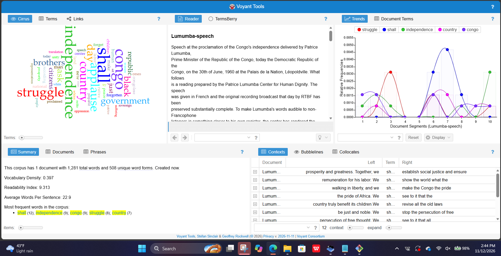
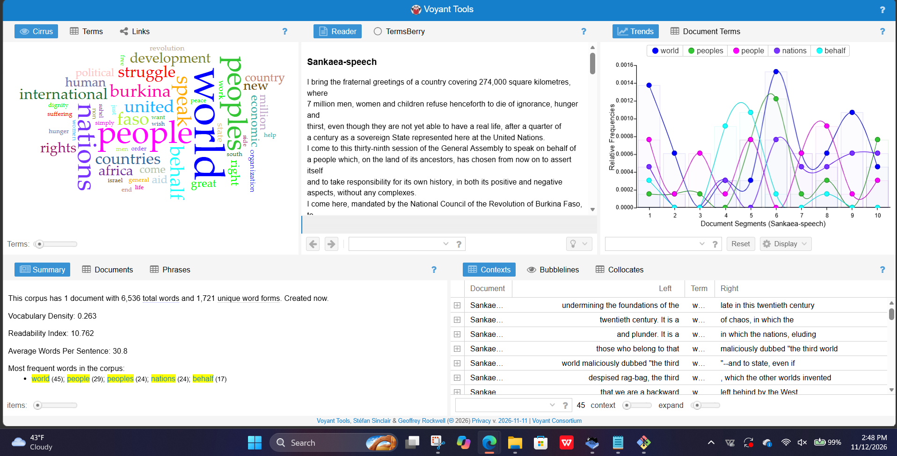

How did Patrice Lumumba and Thomas Sankara use political language to promote African independence, unity, and resistance to foreign influence?
For my corpus analysis, I compared two political speeches by Patrice Lumumba and Thomas Sankara. I chose these leaders because both challenged foreign influence and supported African independence. I used Voyant Tools and AntConc to explore their political language.
Lumumba delivered his speech on June 30, 1960, during Congo's independence from Belgium. He focused on freedom, national unity, and the future of Congo.
Source: Patrice Lumumba Center
Sankara delivered his speech at the United Nations on October 4, 1984. He discussed imperialism, economic inequality, and African independence.
Source: Thomas Sankara's UN Speech
I saved both speeches as text files in my GitHub repository so others can access and analyze them.
View My Political Speech Text Files
I used Voyant Tools to identify frequently used words and themes in both speeches.

Words such as "independence," "Congo," and "struggle" show Lumumba's focus on freedom and building a united nation.

Sankara focused on imperialism, inequality, and the challenges African countries faced after independence.
I used AntConc to find repeated phrases in both speeches.


I noticed that Lumumba repeated phrases like "we shall" and "of the Congo." This shows how he focused on Congo's independence and future.


Using AntConc, I noticed that Sankara repeated phrases like "on behalf of" and "the Third World." This shows how he spoke about the struggles of African countries and other nations facing foreign influence.
After comparing both speeches, I noticed that Lumumba focused more on Congo's independence, while Sankara focused on problems African countries still faced after independence. Both leaders wanted freedom, unity, and less foreign influence.
Through this project, I learned how political leaders use language to express their beliefs and encourage change. Although Lumumba and Sankara spoke in different years, both addressed challenges connected to African independence and foreign influence.